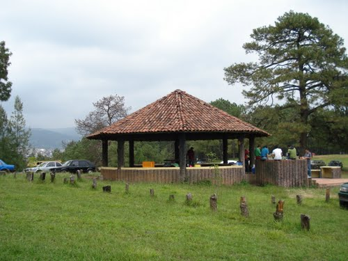

Capilla de Santa María Magdalena |
Fue construido en el siglo XVI y perteneció al gobernador de la Nueva Galicia, Cristóbal de Oñate. Se convirtió en la primera capilla de la región donde la diócesis de los Agustinos comenzó su evangelización y en consecuencia la fundación de Tacámbaro. | |||||||||||||
Laguna de La Magdalena |
Se encuentra dentro del área que era común para el encomendero de Tacámbaro, Cristóbal Pérez de Oñate. Muy cerca se encuentra también la capilla que fue la primera que construyeron los frailes agustinos para la evangelización de la tierra caliente. | |||||||||||||
Parque ecológico Cerro Hueco |
 | Cuenta con cenadores, para comer carnitas, zona para acampar, cancha de basquetbol, una tirolesa y estacionamiento. Es ideal para pasar la tarde y convivir con la naturaleza. | ||||||||||||
Santuario de Nuestra Señora de Fátima |
El lugar ha sido uno de los puntos más visitados por el turismo religioso, ya que se distingue por albergar las imágenes de las vírgenes mejor conocidas como "Las refugiadas". La imagen de la Virgen de Fátima, que se localiza en este templo, es una réplica de la imagen original, obra del escultor José Ferreira Thedim. En el interior también se pueden encontrar pinturas que datan del siglo XIX. | |||||||||||||
Templo del Hospital |
El Templo Hospital no es la excepción, pues es una construcción que data del siglo XVI que conserva el estilo de los conventos agustinos, además está considerada como legado de la labor humanista de Vasco de Quiroga. Se encuentra detrás de La Catedral de San Jerónimo, en el centro del pueblo. |
|
Exposición Agrícola, Ganadera e Industrial. |
Batalla Tacámbaro |
Festival de música tradicional |
Patrono de Tacámbaro |
Vírgenes Refugiadas |